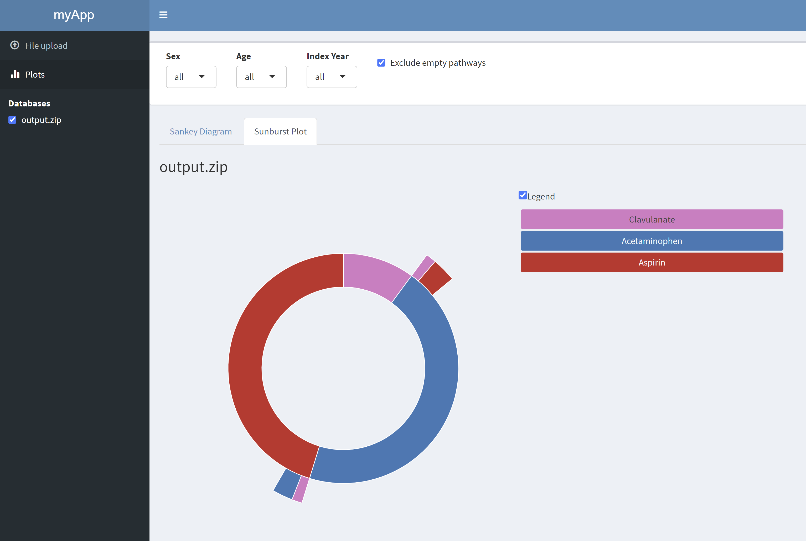

Using TreatmentPatterns’ Shiny Modules
Source:vignettes/articles/usingTreatmentPatternsShinyModules.Rmd
usingTreatmentPatternsShinyModules.RmdTreatmentPatterns provides several shiny
modules. Shiny modules allow to quickly build a shiny app, based on
pre-written code. In TreatmentPatterns there are 3 modules
availible: 1) InputHandler,
2) InteractivePlots, and
3) CharacterizationPlots. These modules
are represented as R6 classes.
Generic interface
Each module as 3 methods that represent the main interface on how to
utilize them: 1) uiBody,
2) uiMenu, 3)
server.
uiBody
The uiBody() method calls for the body of the module,
which can be used inside a layout like fluidPage() from the
shiny package or dashboardPage() from the
shinydashboard package.
uiMenu
The uiMenu() method calls for a menu link which points
toward the page generated by uiBody(). This is typically
used with shinydashboard’s
dashboardPage().
InputHandler
The InputHandler module has some key methods that can be
used to setup your TreatmentPatterns shiny application quickly. First we
need to create an object of the class InputHandler which we
do like so:
library(TreatmentPatterns)
inputHandler <- InputHandler$new("app")Now that our InputHandler is initialized and ready to
go, we have access to the uiBody() and
uiMenu() methods to build our UI with. In this example the
uiMenu() is wrapped inside sidebarMenu() and
dashboardSidebar(). The uiBody() method is
wrapped inside tabItems() and
dashboardBody().
library(shiny)
library(shinydashboard)
inputHandler <- InputHandler$new("app")
ui <- dashboardPage(
header = dashboardHeader(title = "myApp"),
sidebar = dashboardSidebar(sidebarMenu(
# InputHandler menu item
inputHandler$uiMenu(),
# Database Selection
inputHandler$uiDatabaseSelector()
)),
body = dashboardBody(tabItems(
# InputHandler body
inputHandler$uiBody()
))
)We also have access to the setDataPath() and
server() methods. The setDataPath() method
allows us to specify either a path to a zip-file, or pass the input from
our server function.
When we set the path parameter instead, the input
becomes static. Note, that this also renders the uiBody()
and uiMenu() methods redundant.
server <- function(input, output, session) {
shiny::moduleServer("app", function(input, output, session) {
# Set static path
inputHandler$setDataPath(path = system.file(package = "TreatmentPatterns", "DummyOutput", "output.zip"))
# Run server back-end
inputHandler$server(input, output, session)
})
}
shinyApp(ui, server)
If we pass the input, the user can interactively upload a zip file.
# Data uploaded by user
server <- function(input, output, session) {
shiny::moduleServer("app", function(input, output, session) {
# Set input, for interactive file upload
inputHandler$setDataPath(input = input)
# InputHandler back-end
inputHandler$server(input, output, session)
})
}InteractivePlots
Lets first create an InteractivePlots module object.
interactivePlots <- InteractivePlots$new("app")We can now add our UI by calling the uiMenu() and
uiBody() methods.
ui <- dashboardPage(
header = dashboardHeader(title = "myApp"),
sidebar = dashboardSidebar(sidebarMenu(
# InputHandler menu item
inputHandler$uiMenu(),
# InteractivePlots menu item
interactivePlots$uiMenu(),
# Database Selection
inputHandler$uiDatabaseSelector()
)),
body = dashboardBody(tabItems(
# InputHandler body
inputHandler$uiBody(),
# InteractivePlots body
interactivePlots$uiBody()
))
)Finally we can add our server back-end to the server function.
Note that the server() method for
InteractivePlots also takes the inputHandler module object
as an input.
server <- function(input, output, session) {
shiny::moduleServer("app", function(input, output, session) {
# Set input, for interactive file upload
inputHandler$setDataPath(path = system.file(package = "TreatmentPatterns", "DummyOutput", "output.zip"))
# InputHandler back-end
inputHandler$server(input, output, session)
# InteracitvePlots back-end
interactivePlots$server(input, output, session, inputHandler)
})
}
shinyApp(ui, server)
CharacterizationPlots
Lets first create an CharacterizationPlots module
object.
characterizationPlots <- CharacterizationPlots$new("app")We can now add our UI by calling the uiMenu() and
uiBody() methods.
ui <- dashboardPage(
header = dashboardHeader(title = "myApp"),
sidebar = dashboardSidebar(sidebarMenu(
# InputHandler menu item
inputHandler$uiMenu(),
# InteractivePlots menu item
interactivePlots$uiMenu(),
# CharacterizationPlots menu item
characterizationPlots$uiMenu(),
# Database Selection
inputHandler$uiDatabaseSelector()
)),
body = dashboardBody(tabItems(
# InputHandler body
inputHandler$uiBody(),
# InteractivePlots body
interactivePlots$uiBody(),
# CharacterizationPlots body
characterizationPlots$uiBody()
))
)Finally we can add our server back-end to the server function.
Note that the server() method for
InteractivePlots also takes the inputHandler module object
as an input.
server <- function(input, output, session) {
shiny::moduleServer("app", function(input, output, session) {
# Set input, for interactive file upload
inputHandler$setDataPath(path = system.file(package = "TreatmentPatterns", "DummyOutput", "output.zip"))
# InputHandler back-end
inputHandler$server(input, output, session)
# InteractivePlots back-end
interactivePlots$server(input, output, session, inputHandler)
# CharacterizationPlots back-end
characterizationPlots$server(input, output, session, inputHandler)
})
}
shinyApp(ui, server)